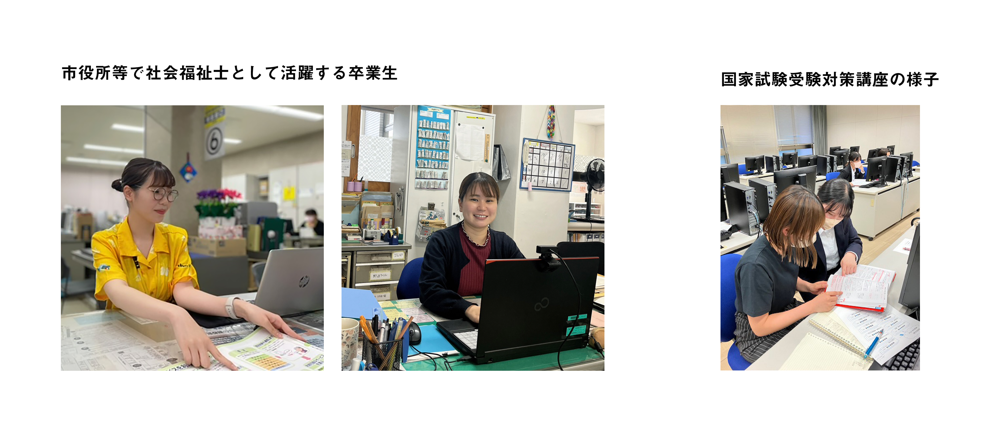

社会福祉士とは？
社会福祉士とは、専門的知識及び技術をもって、身体上、精神上の障害があることや経済的な環境上の理由により日常生活に困っている人々の福祉に関する相談に応じ、助言、指導、福祉サービスや医師その他の保健医療サービスを提供したり、その他の関係者との連携及び調整その他の援助を行ったりします。
本学では、社会福祉士の国家試験に合格するためのサポートをしています。
（就職活動支援｜就職キャリアセンター）
国家試験に合格した多くの卒業生が県内・県外の社会福祉の現場で活躍しています。
高齢者福祉：介護施設、地域包括支援センターなど。
障害者福祉：障害者支援施設、相談支援事業所、就労継続支援事業所など。
児童福祉：児童相談所、児童養護施設、児童心理治療施設、児童発達支援施設など。
医療機関：病院、診療所、精神科施設など。
行政：県庁、市役所、障害者就業・生活支援センター、保健所、刑務所など。
社会福祉協議会：地域福祉活動の推進、社会資源の開発など。
社会福祉実習・国家試験スケジュール
| 時期 | 内容 | |
| 2年次 | 前期 | ソーシャルワーク実習先希望届 提出 |
| 9月 | ソーシャルワーク実習Ⅰ・Ⅱ 実習先発表 | |
| 2月 | ソーシャルワーク実習Ⅰ（5日間） | |
| 3年次 | 8～9月 | ソーシャルワーク実習Ⅱ（20日間） |
| 12月 | ソーシャルワーク実習報告会（令和６年度 ソーシャルワーク実習報告会を実施しました！｜福祉社会学部） | |
| 4年次 | 2月 | 社会福祉士国家試験 |

※社会福祉士国家試験受験資格の受講科目、内容の詳細については、履修要項をご確認ください。
履修要項（大学情報）
top